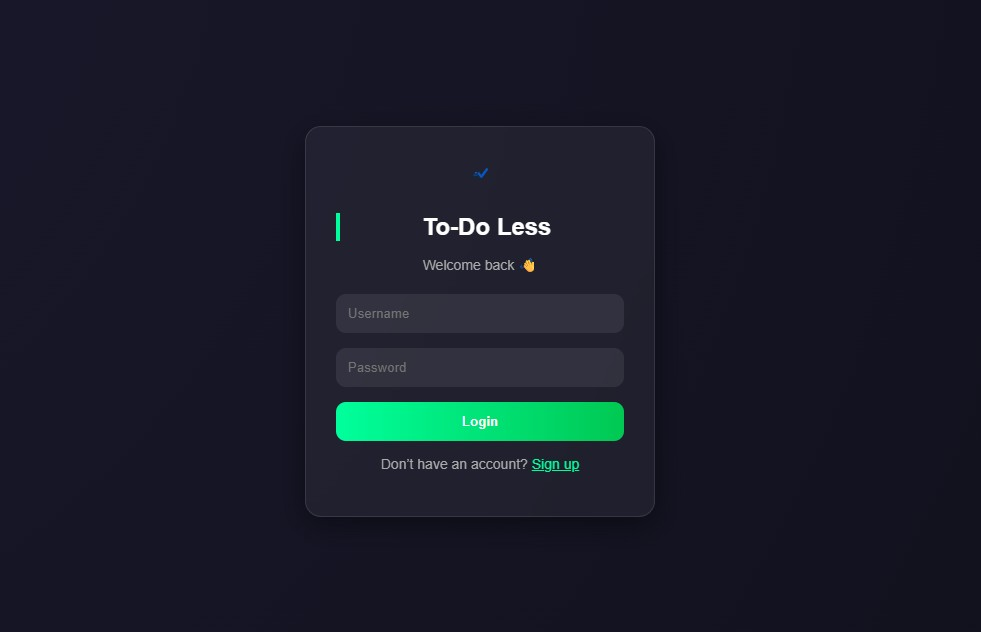
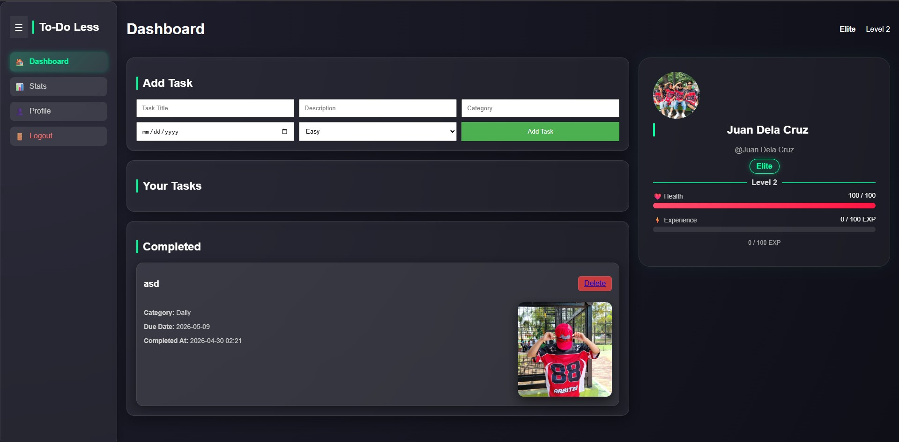
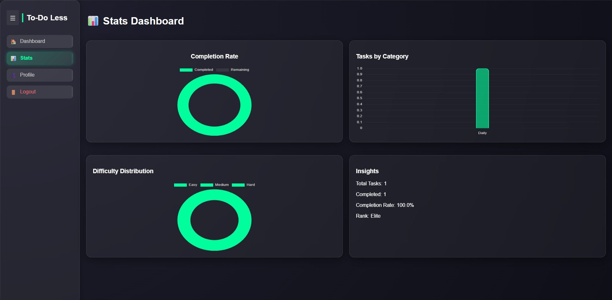

To-Do Less is a gamified task management web application designed to help users organize their daily activities while making productivity more engaging and rewarding. Unlike traditional to-do list systems, To-Do Less combines task management with game-inspired mechanics such as experience points (EXP), levels, ranks, health tracking, and achievement progression. The goal of the system is to motivate users to complete tasks consistently by giving them a sense of progress and accomplishment.


